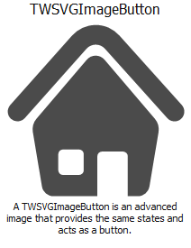
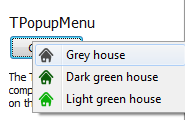
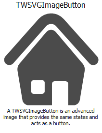
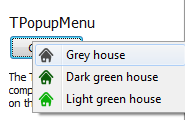

The SVG files are resizable without loss of quality. The inherent size provided by the graphic is the one defined in the file itself (e.g. by the width and height properties, and/or viewBox property). But contrary to the other graphic formats, the width and height of a TWSVGGraphic component may be changed after the image was loaded, without clearing its content. For that reason the code below is valid:
pGraphic := TWSVGGraphic.Create;
pGraphic.LoadFromFile('W:\SVGParser\trunk\Demo\cursor-selected.svg');
pGraphic.SetSize(512, 512);
NOTE the TWSVGImageList behaves the same way, and their size may be
changed dynamically without losing their content, for the same reasons.
A more standard solution may also be preferred, e.g. if a generic source code
compatible with all graphic formats should be created, by using the
StretchDraw() function instead of Draw(). Below is an example:
pGraphic := TWSVGGraphic.Create;
pGraphic.LoadFromFile('C:\cursor-selected.svg');
rect := TRect.Create(0, 0, 512, 512);
pBitmap := TBitmap.Create;
pBitmap.SetSize(rect.Width, rect.Height);
pBitmap.Canvas.StretchDraw(rect, pGraphic);
pBitmap.SaveToFile('c:\cursor-selected.bmp');
pBitmap.Free;
pGraphic.Free;
In case proportional thumbnails are required, the code may be modified as follows:
...
pGraphic.LoadFromFile('C:\cursor-selected.svg');
W := pGraphic.Width;
H := pGraphic.Height;
pGraphic.SetSize((W * 512) div H, 512);
pBitmap.SetSize(pGraphic.Width, pGraphic.Height);
pBitmap.Canvas.Draw(0, 0, pGraphic);
...

 



{kind=link}